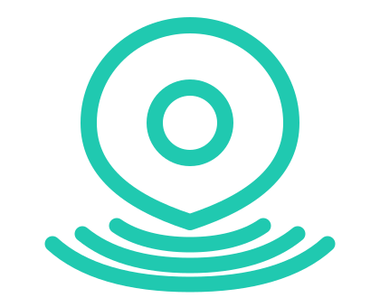
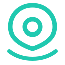
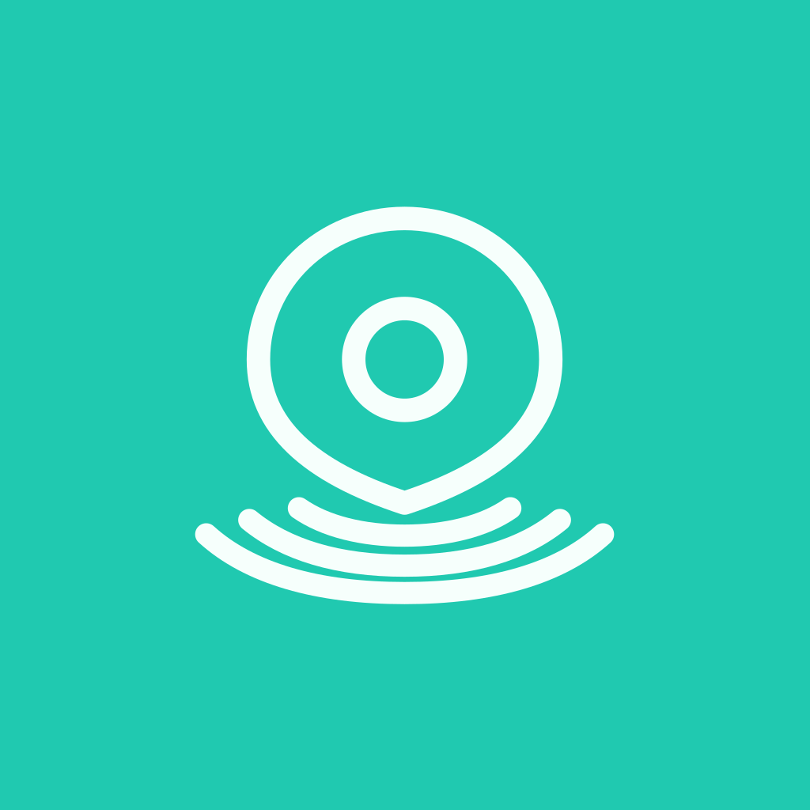
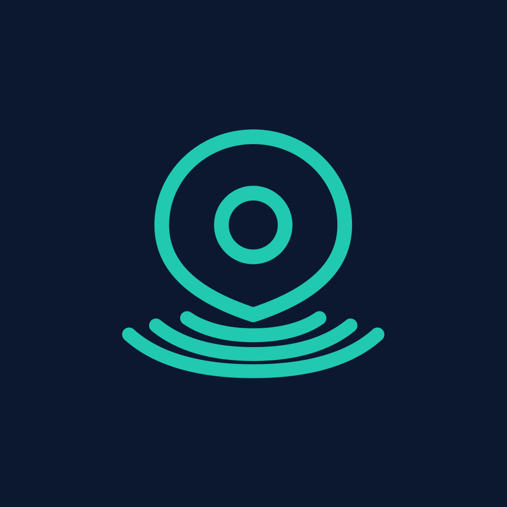
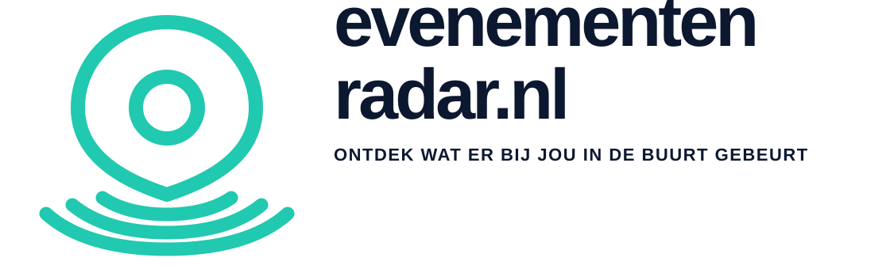
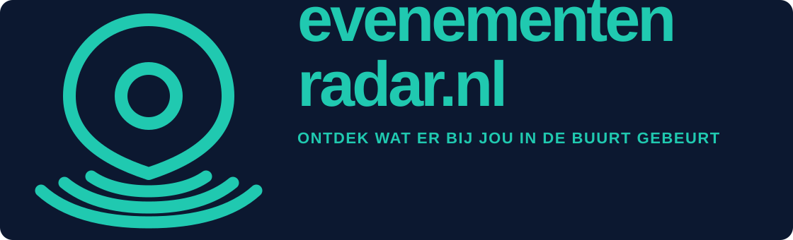
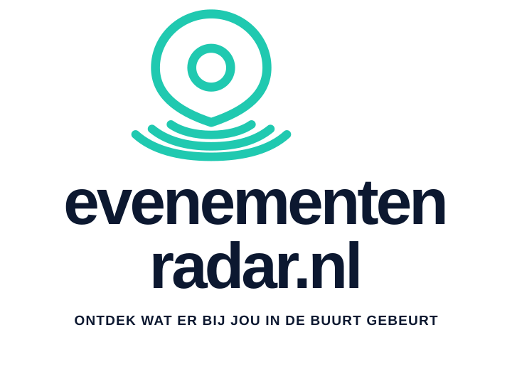
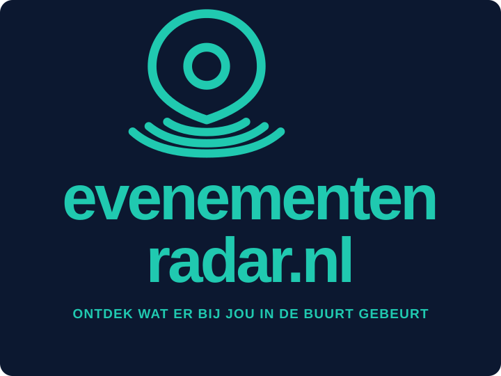
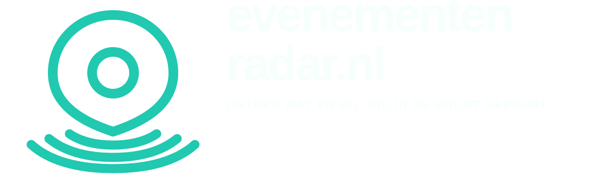

Symbolen
Primary symbol · transparent

Light symbol · dark field
Small-size symbol

App icons · 1024 × 1024
Teal field · iOS / Android safe

Navy field · iOS / Android safe

Wordmarks
Horizontal · light

Horizontal · dark

Stacked · light

Stacked · dark

Safe area
